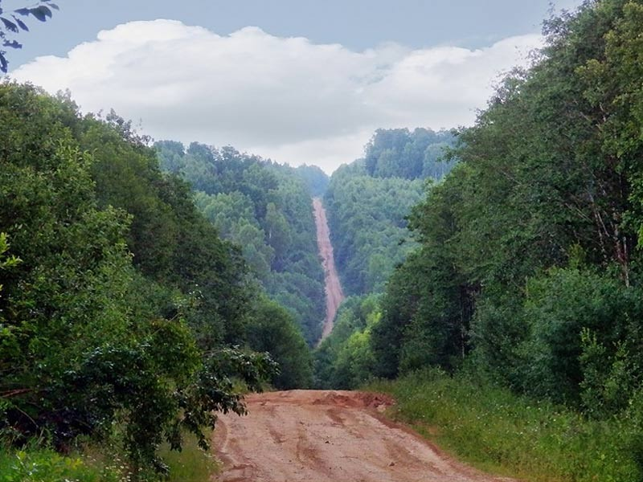
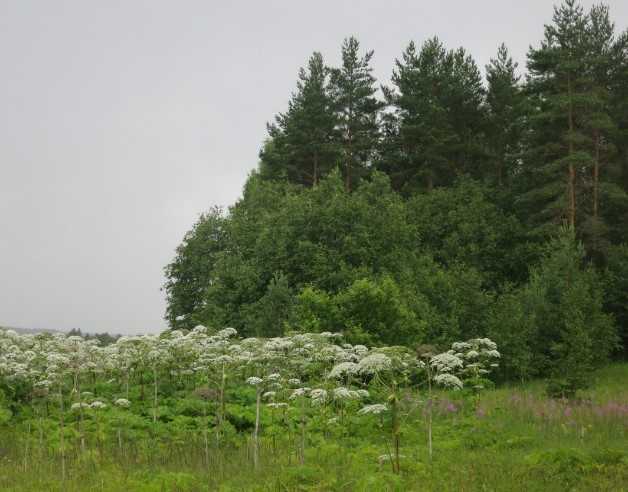
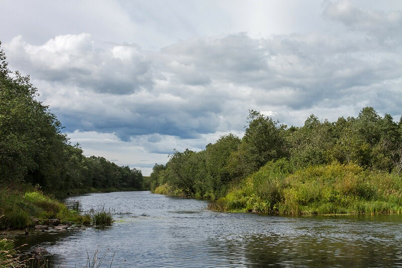
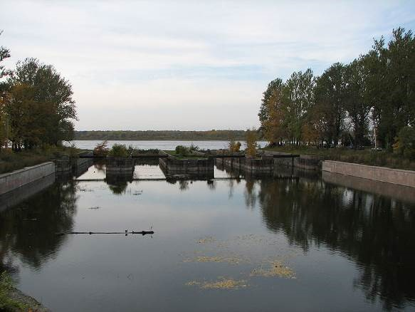
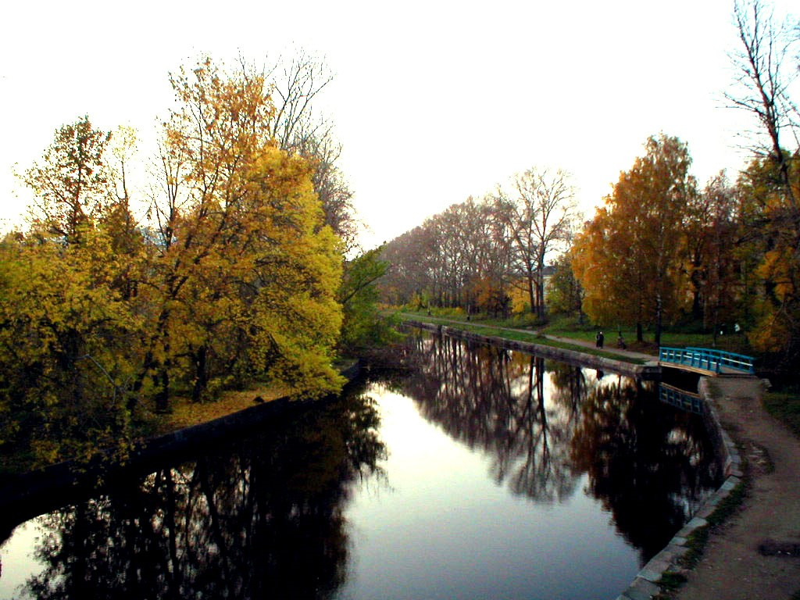
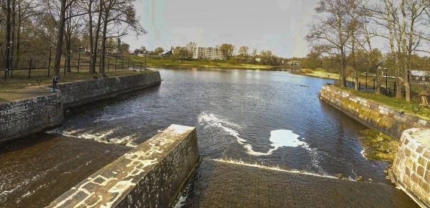
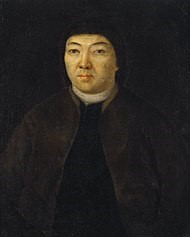

Волочек
Природа
1.Макушка Валдая

Валдайская возвышенность. Название своё она получила благодаря древнему городу Валдаю, через который проходит центральная гряда возвышенности. С возвышенности берут начало реки: Ловать, Мста, Сясь, Цна, Скоморошка и др. Между притоками-ручьями Скоморошки находится, место с неофициальным названием – Макушка Валдая. В 2,5 км от вершины расположен ближайший к ней населённый пункт – деревня Починок Фировсого района Тверской области. Деревня была основана во второй половине XIX века эстонскими переселенцами из города Ревеля. Страдавшие от голода, эстонские переселенцы купили эти земли и строили тут хутор, называя его Нурмекунде («высокое, красивое место»), а также лесопилки, мельницы. О происхождении деревни теперь свидетельствует только памятная стела и памятник «Основателям и потомкам Нурмекунде», установленный в 1995 году. Её абсолютная высота равна 346,9 м. над уровнем моря. Макушка Валдая – гордость Вышневолоцкого района - отмечена практически на всех географических картах России, в том числе и на карте центральной части России. Эту точку изучают все школьники нашей страны, а ведь открыли и доказали её превосходство тоже ученики средней школы. Ещё всю первую половину XX века думали, что высочайшая точка Валдая – высота в 343 метра. Эти данные периодически менялись и находились другие высшие точки. В 1997-2001 годах участники краеведческого кружка Есеневской школы, которым руководил учитель Н.А.Брагин установили, что высшая точка маренной гряды находится в 60 метрах от геодезического триангуляционного знака и равна 346,9 метров над уровнем моря. Теперь на вершине находится знак, который указывает на положение высшей точки.
2.Орхидная горка

Неоподалёку от деревни Ильинское в Вышневолоцком р-не Тверской области находится уникальный памятник природы, взятый под государственную охрану, - местечко Орхидная горка (гора Двинуха). «Орхидная горка», образованная в 1985 году по результатам научных исследований сотрудников кафедры ботаники Тверского государственного университета, является маленьким заповедником орхидей. Здесь на площади около 1 га произрастают 12 видов охраняемых растений из семейства Орхидных.
Чина лесная, Башмачок настоящий, Яртышник шлемоносный
Среди них одно из самых удивительных растений нашего края – башмачок настоящий или венерин башмачок, занесенный в Красную Книгу. Встречаются здесь редкие и охраняемые в Тверской области растения из других семейств.
3.«Черенцовский заказник»

Он находится в 23 км к юго-востоку от г. Вышнего Волочка, окрестности деревень Гирино – Ильинское. Образован 12 февраля 1982 года. Общая площадь заказника- 21,5 га. Профиль особо охраняемой природной территории: - комплексный (ландшафтный), предназначен для сохранения и восстановления природных комплексов (природных ландшафтов); - биологический (ботанический), предназначен для сохранения и восстановления редких и исчезающих видов растений и животных Сосновые перелески Черенцовского заказника (близ д. Гирино и Ильинское) с доминированием в травяном покрове башмачка настоящего уникальны и не имеют аналогов на территории области. Территория заказника представляет светлый разреженный сосняк с березой – злаково-разнотравный. Сосна высотой 12 – 15 м, диаметром ствола 25 - 30 см. В оврагах и понижениях рельефа произрастает орех-лещина. В подлеске – калина, крушина, шиповник майский, волчье лыко. В травянистом ярусе местами видны поляны земляники лесной и ландыша майского. Растительность «Черенцовского заказника» представляет огромный ботанический интерес. На территории заказника произрастают следующие представители охраняемых видов: дремлик болотный, кокушник комарниковый, горечавка крестовидная, пальчатокоренник пятнистый, любка двулистная и др.
4.Вышневолоцкие каналы



История строительства водного пути началась 12 января 1703 года, когда Пётр I подписал указ о строительстве канала между реками Цной и Тверцой. Это был древний волок, соединяющий Тверцу и Цну, и давший название селению Вышний Волочёк. Руководство строительством было возложено на царского стольника воеводу князя М. П. Гагарина;. Строительство канала длиной 2811 метров и шириной 15 метров с двумя шлюзами было закончено весной 1709 года. Существующий и сегодня канал получил имя Гагаринского (в честь руководителя строительства князя М. П. Гагарина), Уже летом 1709 года стало ясно, что канал построен неправильно: воды для свободного хода судов не хватало. С инициативой довести водную систему до работоспособного состояния выступил новгородский купец Михаил Сердюков. 26 июня 1719 года Пётр I издал указ об отдаче М. И. Сердюкову в содержание Вышневолоцкого судоходного пути. СамоучкА Сердюков оказался не только хорошим гидротехником, но и успешным организатором строительства. Все работы под его началом шли быстро, а обходились ему (по сравнению с казённым строительством) недорого. Плотина с водохранилищем была построена в 1741 году. . Постепенно водное хозяйство развивалось: Деятельность М. Сердюкова была отмечена правительством. В 1743 году Сердюков с сыном были пожалованы дворянством, а в 1745 году им были даны чины коллежского советника и коллежского асессора.
